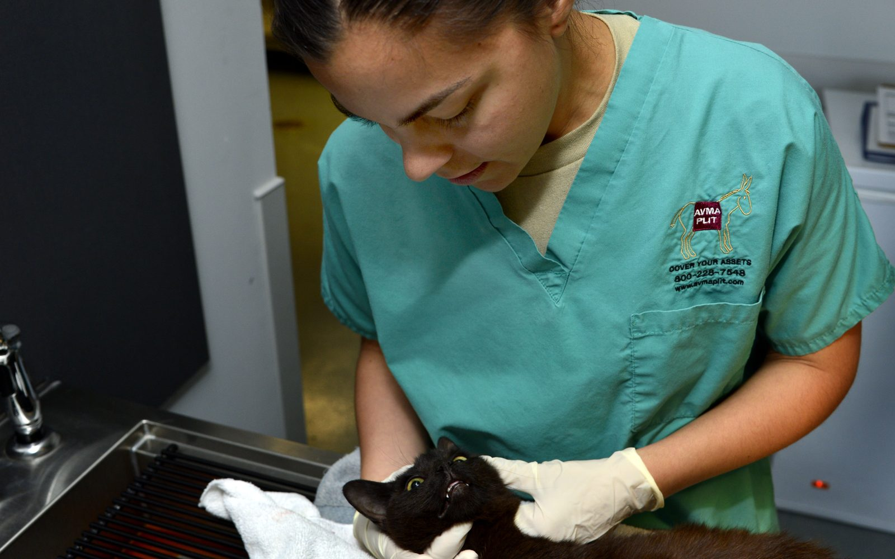
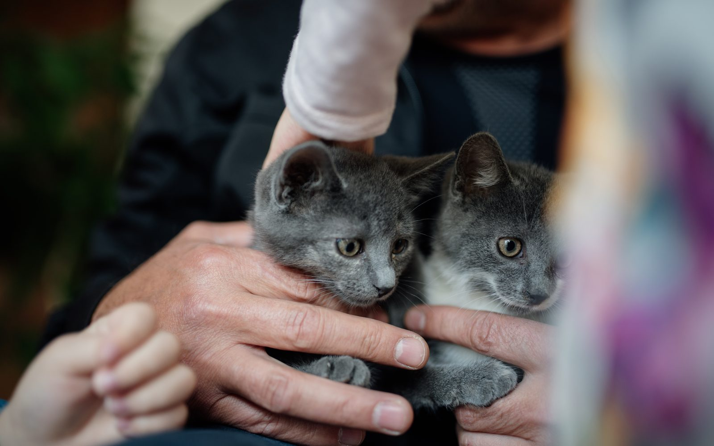

Chats
Mon chat ne mange pas : 9 causes possibles et quand s'inquiéter vraiment
Chez le chat, une perte d'appétit est un message : tantôt anodin, tantôt une alarme. Passez en revue les neuf causes et les signes d'alerte qui exigent une visite vétérinaire immédiate.

Chats
Vaccins du chat : le calendrier complet, les rappels et les suites de l'injection
De la première injection à six semaines au rappel annuel : tout ce qu'un nouveau propriétaire de chat doit savoir sur les vaccins essentiels, leur calendrier et leurs effets secondaires.

Chats
10 signes qui prouvent que votre chat vous aime (le n° 8 est toujours mal interprété)
Les chats ne déclarent pas leur amour comme les chiens : ils envoient chaque jour des signaux subtils, du lent battement de paupières au « pétrissage » du plaid. Décodez le langage d'amour de votre chat.